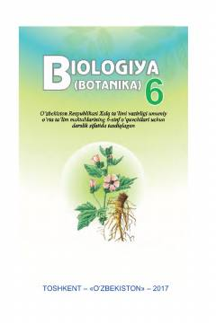

BB6-sinf o'quvchilari uchun botanika bo'yicha rasmiy darslik.
Bu darslik umumiy o'rta ta'lim maktablarining 6-sinf o'quvchilari uchun mo'ljallangan bo'lib, botanika fanining asosiy bo'limlari, o'simlik hujayrasining tuzilishi, gulli o'simliklarning organlari va hayotiy faoliyati hamda o'simliklar sistematikasini o'rgatadi. Darslikda amaliy ishlar, laboratoriya mashg'ulotlari va mustahkamlovchi savollar ham berilgan. O'zbekiston florasi va o'simliklarning tabiatdagi ahamiyatiga alohida e'tibor qaratilgan.